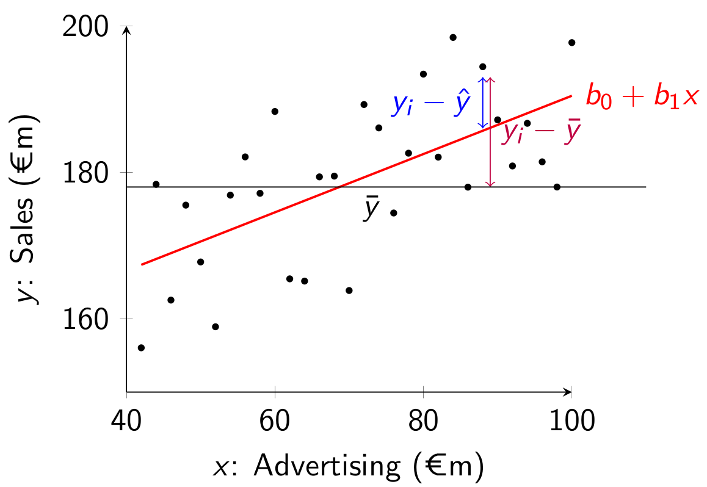

In Chapter 11 we learned how to test if the model was useful or useless. But we also want to be able to quantify the usefulness of the model. That is, we want to say how much of the variation in the Y-variable we can explain with the X variable.
We do this by comparing the model error before estimating the regression model to the model error after estimating the regression model.
12.1 Total Sum of Squares
Without a regression model, the best way to predict values y_i is to use the sample mean \bar{y}. If we do this the sum of squared errors before the regression is
SST=\sum_{i=1}^n \left(y_i-\bar{y}\right)^2
This is the sum of the squared difference between the actual value of y_i and the predicted value (without the model). We call this the SST, the total sum of squares.
With a regression model, we would predict y_i using the corresponding value x_i and use \hat{y}_i=b_0+b_1 x_i to predict y_i. As we already learned in Chapter 9, the sum of squared errors (SSE) is:
SSE=\sum_{i=1}^n \left( y_i-\hat{y}_i \right)^2
Graphically the SST is the sum of squared deviations from the sample mean \bar{y} (the horizontal line) and the SSE is the sum of squared deviations from \hat{y} (the regression line): 
12.2 Sum of Squares Due to Regression
We also define a related 3rd term, the sum of squares due to regression: SSR=\sum_{i=1}^n \left( \hat{y}_i-\bar{y} \right)^2 This measures the variation explained by the regression model. We will not show the steps here but it can be shown that:
\underbrace{\sum_{i=1}^n \left( {y}_i-\bar{y} \right)^2}_{=SST} =
\underbrace{\sum_{i=1}^n \left( {y}_i-\hat{y}_i \right)^2}_{=SSE} +
\underbrace{\sum_{i=1}^n \left( \hat{y}_i-\bar{y} \right)^2}_{=SSR}
This means that SST=SSE+SSR always.
12.3 Coefficient of Determination: R squared
The coefficient of determination, also called R squared, is given by:
R^2 = \frac{SSR}{SST}=1 - \frac{SSE}{SST}
The R^2 is always between 0 and 1 and measures the proportion of the variation in the Y data explained by the X data:
If R^2 is small (close to 0), the model only explains a small amount of the variation in y-data.
If R^2 is large (close to 1), the model explains a lot of the variation in y-data.
For example, if R^2 =0.75, then the model explains 75% of the variation in the y-data and 25% is left unexplained.
This can also be explained by considering the two extreme cases:
Imagine our model was completely useless (b_1=0). Then our best predictor for y_i is the sample mean: \hat{y}_i=\bar{y}. In this case SSR=0 and SSE=SST. The R^2 is then equal to R^2=\frac{SSR}{SST}=\frac{0}{SST}=0.
Imagine our model was completely perfect and we could perfectly predict y_i with x_i. Then the residuals e_i would all be zero and the sum of squared errors would be zero (SSE=0). Then the R^2 would be R^2=1-\frac{SSE}{SST}=1-\frac{0}{SST}=1.
In general we will get an R^2 in between these two extreme cases. When the R^2 is close to zero, the model is close to useless. When the R^2 is close to one, the model is very useful (close to perfect).
For the simple linear regression model, it turns out that the R^2 is the same as the square of the sample correlation coefficient r_{X,Y}, so R^2 = r_{X,Y}^2. This is why it is called the R squared.
12.4SSE, SSR and SST in R
We can use the anova() function to obtain the SSR, SSR and SST in R. ANOVA here means analysis of variance.
To use this function we first need to estimate a model that tries to explain Y using only an intercept (so no X variable). We can do this in R by replacing the X variable in the lm() function with a 1. Let’s do this and let’s call the model m1:
df <-read.csv("advertising-sales.csv")m1 <-lm(sales ~1, data = df)summary(m1)
Call:
lm(formula = sales ~ 1, data = df)
Residuals:
Min 1Q Median 3Q Max
-12.422 -3.647 -1.123 3.377 12.977
Coefficients:
Estimate Std. Error t value Pr(>|t|)
(Intercept) 14.0225 0.3689 38.01 <2e-16 ***
---
Signif. codes: 0 '***' 0.001 '**' 0.01 '*' 0.05 '.' 0.1 ' ' 1
Residual standard error: 5.217 on 199 degrees of freedom
We get a model with only an intercept. It turns out that this intercept is exactly the same as the sample mean:
mean(df$sales)
[1] 14.0225
This is because if we are only using one parameter to predict Y, the best one to use is the mean.
Now we estimate our model that does include an X variable. Let’s call this m2. We then use the anova() function to compare the variability of the errors before the inclusion of the regressor and afterwards:
m2 <-lm(sales ~ advertising, data = df)anova(m1, m2)
Analysis of Variance Table
Model 1: sales ~ 1
Model 2: sales ~ advertising
Res.Df RSS Df Sum of Sq F Pr(>F)
1 199 5417.1
2 198 1338.4 1 4078.7 603.37 < 2.2e-16 ***
---
Signif. codes: 0 '***' 0.001 '**' 0.01 '*' 0.05 '.' 0.1 ' ' 1
In the table the SST is 5417.1, under RSS for model 1. RSS here stands for residual sum of squares, which is another name for the sum of squared errors. Because model 1 does not include any regressors, the SST is the same as the residual sum of squares (its SSR is zero).
The SSE for model 2 (our model of interest) is under RSS and equals 1338.4. This is the residual sum of squares for model 2, the same as the SSE.
Finally, the SSR is the 4078.7 under Sum of Sq for model 2.
More generally, if Model 1 is a model with our dependent variable and only a constant and Model 2 is the model with our dependent variable and the independent variable, the SST, SSE and SSR in the anova() output are in the following parts of the table:
Res.Df
RSS
Df
\;\;\;Sum of Sq
1
n-1
SST
2
n-2
SSE
1
SSR
If all you need to get is the SSE, a faster way is to use the deviance() function on the regression model. We can confirm that it also gives 1338.4:
m <-lm(sales ~ advertising, data = df)deviance(m)
[1] 1338.444
We could also just sum the squared residuals from the model as well:
m <-lm(sales ~ advertising, data = df)sum(m$residuals^2)
[1] 1338.444
Another way to get the SST is to use the formula SST=\left( n-1 \right)s_y^2. To see where this formula comes from we write the formula for the sample variance: s^2_y=\frac{\sum_{i=1}^n\left( y_i-\bar{y} \right)^2}{n-1}=\frac{SST}{n-1} Multiplying across both sides with (n-1) gives the other formula for the SST. Let’s test it in R:
(nrow(df) -1) *var(df$sales)
[1] 5417.149
We get the same as above!
We can also calculate it using the formula SST=\sum_{i=1}^n\left( y_i-\bar{y} \right)^2:
sum((df$sales -mean(df$sales))^2)
[1] 5417.149
Again we get the same as above.
Finally, another way to get the SSR is to calculate the SST and SSR and use the formula SST=SSE+SSR to get:
SSR = SST - SSE
Let’s confirm that also gives the same answer: